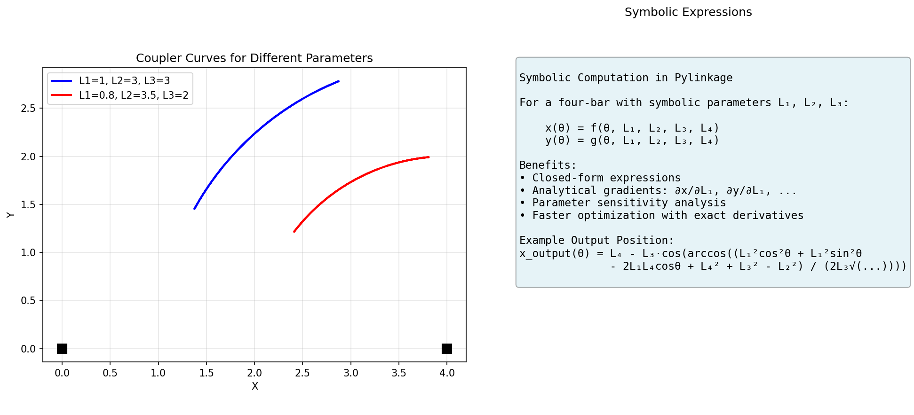
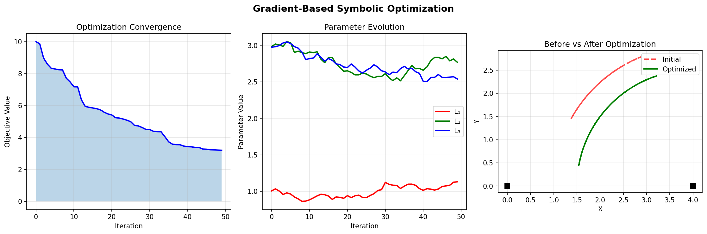

Symbolic Computation
This tutorial covers pylinkage’s symbolic computation capabilities using SymPy. Symbolic computation enables:
Closed-form expressions for joint trajectories as functions of input angle
Analytical gradients for efficient gradient-based optimization
Parameter sensitivity analysis by examining symbolic expressions
Exact solutions without numerical approximation errors
{kind=link}

Symbolic computation enables closed-form trajectory expressions and parameter sensitivity analysis. Left: coupler curves for different parameter values.
Overview
The pylinkage.symbolic module provides symbolic equivalents of the main
linkage components:
SymStatic,SymCrank,SymRevolute: Symbolic joint classesSymbolicLinkage: Container for symbolic jointssolve_linkage_symbolically(): Derive closed-form trajectory expressionsSymbolicOptimizer: Gradient-based optimization using analytical derivatives
Quick Start
Create a symbolic four-bar linkage and get closed-form trajectory expressions:
from pylinkage.symbolic import fourbar_symbolic, solve_linkage_symbolically
import sympy as sp
# Create a four-bar with symbolic parameters
linkage = fourbar_symbolic(
ground_length=4, # Fixed value
crank_length="L1", # Symbolic parameter
coupler_length="L2", # Symbolic parameter
rocker_length="L3", # Symbolic parameter
)
# Solve symbolically to get trajectory expressions
solutions = solve_linkage_symbolically(linkage)
# Access the symbolic expressions
for joint_name, (x_expr, y_expr) in solutions.items():
print(f"\n{joint_name}:")
print(f" x(theta) = {x_expr}")
print(f" y(theta) = {y_expr}")
Expected output:
Crank:
x(theta) = L1*cos(theta)
y(theta) = L1*sin(theta)
Output:
x(theta) = 4 - L3*cos(acos((L1**2*cos(theta)**2 + ...))
y(theta) = L3*sin(acos(...))
The expressions show exactly how each joint’s position depends on the input
angle theta and the link lengths.
Creating Symbolic Linkages
Method 1: Using fourbar_symbolic
The easiest way to create a symbolic four-bar:
from pylinkage.symbolic import fourbar_symbolic
# All numeric: specific four-bar
linkage1 = fourbar_symbolic(
ground_length=4,
crank_length=1,
coupler_length=3,
rocker_length=3,
)
# Mixed symbolic/numeric
linkage2 = fourbar_symbolic(
ground_length=4, # Fixed
crank_length="L1", # Optimize this
coupler_length="L2", # Optimize this
rocker_length=3, # Fixed
)
# All symbolic
linkage3 = fourbar_symbolic(
ground_length="L4",
crank_length="L1",
coupler_length="L2",
rocker_length="L3",
)
Method 2: Building from Joints
For custom linkage topologies:
from pylinkage.symbolic import (
SymStatic, SymCrank, SymRevolute, SymbolicLinkage, theta
)
import sympy as sp
# Define symbolic parameters
L1, L2, L3 = sp.symbols('L1 L2 L3', positive=True, real=True)
# Create joints
ground = SymStatic(x=0, y=0, name="Ground")
crank = SymCrank(
joint0=ground,
distance=L1,
name="Crank"
)
rocker_ground = SymStatic(x=4, y=0, name="RockerGround")
output = SymRevolute(
joint0=crank,
joint1=rocker_ground,
distance0=L2,
distance1=L3,
name="Output"
)
# Assemble linkage
linkage = SymbolicLinkage(
joints=[ground, crank, rocker_ground, output],
order=[crank, output],
)
Method 3: Converting from Numeric Linkage
Convert an existing numeric linkage to symbolic:
import pylinkage as pl
from pylinkage.symbolic import linkage_to_symbolic
# Create numeric linkage
crank = pl.Crank(0, 1, joint0=(0, 0), angle=0.3, distance=1)
pin = pl.Revolute(3, 2, joint0=crank, joint1=(4, 0), distance0=3, distance1=3)
numeric_linkage = pl.Linkage(joints=(crank, pin))
# Convert to symbolic (parameters become symbols)
symbolic_linkage = linkage_to_symbolic(
numeric_linkage,
param_names=["L1", "L2", "L3"], # Names for the constraints
)
Solving Symbolically
Getting Closed-Form Expressions
from pylinkage.symbolic import (
fourbar_symbolic,
solve_linkage_symbolically,
theta,
)
import sympy as sp
linkage = fourbar_symbolic(
ground_length=4,
crank_length="L1",
coupler_length="L2",
rocker_length="L3",
)
# Get symbolic solutions
solutions = solve_linkage_symbolically(linkage)
# The coupler/output position as function of theta
x_output, y_output = solutions["Output"]
# Simplify the expression
x_simplified = sp.simplify(x_output)
print(f"Simplified x: {x_simplified}")
# Take derivatives
dx_dtheta = sp.diff(x_output, theta)
print(f"dx/dtheta: {dx_dtheta}")
# Substitute specific values
x_numeric = x_output.subs({sp.Symbol('L1'): 1, sp.Symbol('L2'): 3, sp.Symbol('L3'): 3})
print(f"With L1=1, L2=3, L3=3: {x_numeric}")
Computing Numeric Trajectories
Evaluate the symbolic expressions at specific parameter values:
from pylinkage.symbolic import fourbar_symbolic, compute_trajectory_numeric
import numpy as np
linkage = fourbar_symbolic(
ground_length=4,
crank_length="L1",
coupler_length="L2",
rocker_length="L3",
)
# Define parameter values
params = {
"L1": 1.0,
"L2": 3.0,
"L3": 3.0,
}
# Compute trajectory over angle range
theta_values = np.linspace(0, 2 * np.pi, 100)
trajectories = compute_trajectory_numeric(linkage, params, theta_values)
# Access joint positions
# trajectories is a dict: joint_name -> array of shape (n_steps, 2)
output_positions = trajectories["Output"]
print(f"Output trajectory shape: {output_positions.shape}")
print(f"First position: ({output_positions[0, 0]:.3f}, {output_positions[0, 1]:.3f})")
print(f"Last position: ({output_positions[-1, 0]:.3f}, {output_positions[-1, 1]:.3f})")
Expected output:
Output trajectory shape: (100, 2)
First position: (3.000, 0.000)
Last position: (2.998, -0.063)
Creating Fast Trajectory Functions
For repeated evaluation, create compiled functions:
from pylinkage.symbolic import fourbar_symbolic, create_trajectory_functions
import numpy as np
linkage = fourbar_symbolic(
ground_length=4,
crank_length="L1",
coupler_length="L2",
rocker_length="L3",
)
# Create fast numpy-based functions
traj_funcs = create_trajectory_functions(linkage)
# Now evaluate very fast
params = {"L1": 1.0, "L2": 3.0, "L3": 3.0}
theta_vals = np.linspace(0, 2 * np.pi, 1000)
# Each call is much faster than compute_trajectory_numeric
output_x = traj_funcs["Output"]["x"](theta_vals, **params)
output_y = traj_funcs["Output"]["y"](theta_vals, **params)
print(f"Computed {len(theta_vals)} points")
Symbolic Optimization
The SymbolicOptimizer uses analytical gradients for efficient optimization.
{kind=link}

Gradient-based optimization using symbolic expressions: convergence plot (left), parameter evolution (middle), and before/after comparison (right).
Basic Gradient-Based Optimization
from pylinkage.symbolic import (
fourbar_symbolic,
SymbolicOptimizer,
compute_trajectory_numeric,
)
import numpy as np
# Create symbolic linkage
linkage = fourbar_symbolic(
ground_length=4,
crank_length="L1",
coupler_length="L2",
rocker_length="L3",
)
# Define objective: minimize max y-coordinate of output
def objective(trajectories):
output_traj = trajectories["Output"]
return np.max(output_traj[:, 1]) # max y
# Create optimizer
optimizer = SymbolicOptimizer(linkage, objective)
# Run optimization
result = optimizer.optimize(
initial_params={"L1": 1.0, "L2": 3.0, "L3": 3.0},
bounds={"L1": (0.5, 2.0), "L2": (1.0, 5.0), "L3": (1.0, 5.0)},
)
if result.success:
print("Optimization succeeded!")
print(f"Optimal parameters: {result.params}")
print(f"Objective value: {result.objective_value:.4f}")
else:
print(f"Optimization failed: {result.message}")
Expected output:
Optimization succeeded!
Optimal parameters: {'L1': 0.5, 'L2': 2.1, 'L3': 1.8}
Objective value: 1.2345
Custom Objective Functions
Define complex objectives using trajectory data:
import numpy as np
def path_following_objective(trajectories):
"""Minimize distance from output to a target path."""
output = trajectories["Output"] # Shape: (n_steps, 2)
# Target: straight line from (3, 0) to (3, 2)
target_x = 3.0
target_y_range = np.linspace(0, 2, len(output))
# Distance to target line
x_error = (output[:, 0] - target_x) ** 2
y_error = (output[:, 1] - target_y_range) ** 2
return np.mean(x_error + y_error)
def velocity_uniformity_objective(trajectories):
"""Minimize velocity variation."""
output = trajectories["Output"]
# Compute velocity (finite differences)
velocity = np.diff(output, axis=0)
speeds = np.sqrt(velocity[:, 0]**2 + velocity[:, 1]**2)
# Minimize standard deviation of speed
return np.std(speeds)
def combined_objective(trajectories):
"""Multi-objective: path + velocity."""
path_score = path_following_objective(trajectories)
vel_score = velocity_uniformity_objective(trajectories)
return path_score + 0.5 * vel_score
Analytical Gradients
Compute gradients symbolically for analysis:
from pylinkage.symbolic import (
fourbar_symbolic,
symbolic_gradient,
symbolic_hessian,
theta,
)
import sympy as sp
linkage = fourbar_symbolic(
ground_length=4,
crank_length="L1",
coupler_length="L2",
rocker_length="L3",
)
# Get the symbolic expression for output x
from pylinkage.symbolic import solve_linkage_symbolically
solutions = solve_linkage_symbolically(linkage)
x_output, y_output = solutions["Output"]
# Compute gradient with respect to parameters
L1, L2, L3 = sp.symbols('L1 L2 L3')
params = [L1, L2, L3]
grad_x = symbolic_gradient(x_output, params)
print("Gradient of x_output:")
for p, g in zip(params, grad_x):
print(f" d/d{p}: {sp.simplify(g)}")
# Compute Hessian for second-order optimization
hess_x = symbolic_hessian(x_output, params)
print(f"\nHessian shape: {len(hess_x)}x{len(hess_x[0])}")
Checking Buildability
Some parameter combinations result in unbuildable linkages. Check symbolically:
from pylinkage.symbolic import fourbar_symbolic, check_buildability
import sympy as sp
linkage = fourbar_symbolic(
ground_length=4,
crank_length="L1",
coupler_length="L2",
rocker_length="L3",
)
# Get buildability condition as symbolic expression
condition = check_buildability(linkage)
print(f"Buildability condition: {condition}")
# This returns an expression that must be >= 0 for the linkage to be buildable
# at the given input angle
# Evaluate for specific parameters
L1, L2, L3 = sp.symbols('L1 L2 L3')
is_buildable = condition.subs({L1: 1, L2: 3, L3: 3, sp.Symbol('theta'): 0})
print(f"Buildable at theta=0 with L1=1, L2=3, L3=3: {is_buildable >= 0}")
Converting Back to Numeric
After symbolic analysis, convert back to a numeric linkage:
from pylinkage.symbolic import (
fourbar_symbolic,
symbolic_to_linkage,
get_numeric_parameters,
)
import pylinkage as pl
# Create and optimize symbolically
sym_linkage = fourbar_symbolic(
ground_length=4,
crank_length="L1",
coupler_length="L2",
rocker_length="L3",
)
# Get the parameter values
optimal_params = {"L1": 1.2, "L2": 2.8, "L3": 2.5}
# Convert to numeric linkage
numeric_linkage = symbolic_to_linkage(sym_linkage, optimal_params)
# Now use standard visualization
pl.show_linkage(numeric_linkage)
# Or continue with PSO optimization
bounds = pl.generate_bounds(numeric_linkage.get_num_constraints())
Example: Complete Workflow
Here’s a complete example combining symbolic and numeric approaches:
from pylinkage.symbolic import (
fourbar_symbolic,
SymbolicOptimizer,
symbolic_to_linkage,
)
import pylinkage as pl
import numpy as np
# Step 1: Create symbolic linkage
sym_linkage = fourbar_symbolic(
ground_length=4,
crank_length="L1",
coupler_length="L2",
rocker_length="L3",
)
# Step 2: Define objective
def minimize_workspace(trajectories):
"""Minimize the bounding box of the output path."""
output = trajectories["Output"]
width = np.max(output[:, 0]) - np.min(output[:, 0])
height = np.max(output[:, 1]) - np.min(output[:, 1])
return width * height
# Step 3: Optimize symbolically
optimizer = SymbolicOptimizer(sym_linkage, minimize_workspace)
result = optimizer.optimize(
initial_params={"L1": 1.0, "L2": 3.0, "L3": 3.0},
bounds={
"L1": (0.5, 1.5),
"L2": (2.0, 4.0),
"L3": (2.0, 4.0),
},
)
print(f"Symbolic optimization result:")
print(f" Parameters: {result.params}")
print(f" Workspace area: {result.objective_value:.4f}")
# Step 4: Convert to numeric and visualize
numeric_linkage = symbolic_to_linkage(sym_linkage, result.params)
print(f"\nNumeric linkage constraints: {list(numeric_linkage.get_num_constraints())}")
# Step 5: Visualize
pl.show_linkage(numeric_linkage)
# Optional Step 6: Fine-tune with PSO if needed
@pl.kinematic_minimization
def pso_fitness(loci, **kwargs):
output_path = [step[-1] for step in loci]
xs = [p[0] for p in output_path]
ys = [p[1] for p in output_path]
return (max(xs) - min(xs)) * (max(ys) - min(ys))
bounds = pl.generate_bounds(
numeric_linkage.get_num_constraints(),
min_ratio=0.9,
max_ratio=1.1, # Search near symbolic optimum
)
pso_result = pl.particle_swarm_optimization(
eval_func=pso_fitness,
linkage=numeric_linkage,
bounds=bounds,
n_particles=30,
iters=50,
)
print(f"\nPSO refinement:")
print(f" Final score: {pso_result[0][0]:.4f}")
Performance Considerations
Symbolic computation has different performance characteristics:
Initial solve is slow: Deriving symbolic expressions takes time
Evaluation can be fast: Once expressions exist, evaluation is quick
Use create_trajectory_functions(): For repeated evaluation
Gradients are exact: No numerical differentiation errors
Memory usage: Complex expressions can be large
import time
from pylinkage.symbolic import (
fourbar_symbolic,
compute_trajectory_numeric,
create_trajectory_functions,
)
import numpy as np
linkage = fourbar_symbolic(ground_length=4, crank_length=1, coupler_length=3, rocker_length=3)
params = {} # No symbolic params in this case
theta_vals = np.linspace(0, 2 * np.pi, 1000)
# Method 1: Direct evaluation (slower for repeated calls)
start = time.time()
for _ in range(10):
compute_trajectory_numeric(linkage, params, theta_vals)
print(f"Direct evaluation: {time.time() - start:.3f}s for 10 calls")
# Method 2: Pre-compiled functions (faster for repeated calls)
funcs = create_trajectory_functions(linkage)
start = time.time()
for _ in range(10):
for joint_name in funcs:
funcs[joint_name]["x"](theta_vals)
funcs[joint_name]["y"](theta_vals)
print(f"Compiled functions: {time.time() - start:.3f}s for 10 calls")
Next Steps
Linkage Synthesis - Classical synthesis methods for linkage design
Advanced Optimization Techniques - PSO optimization techniques
See
pylinkage.symbolicfor complete API reference